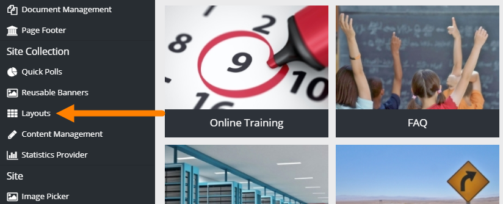
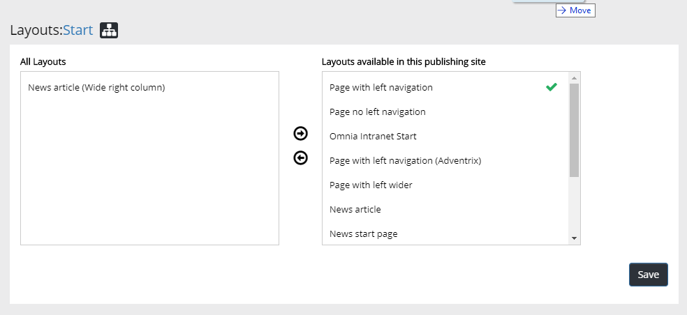
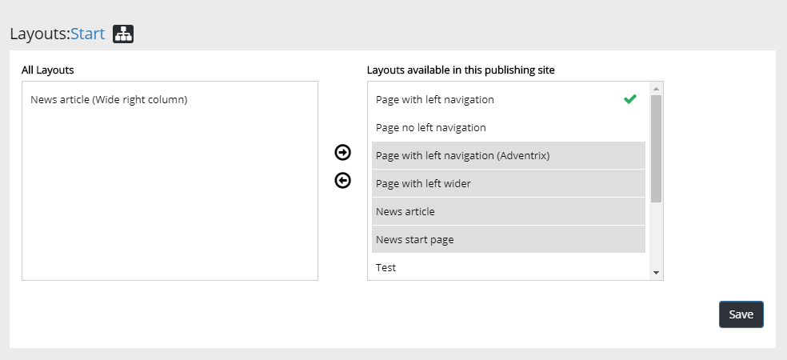
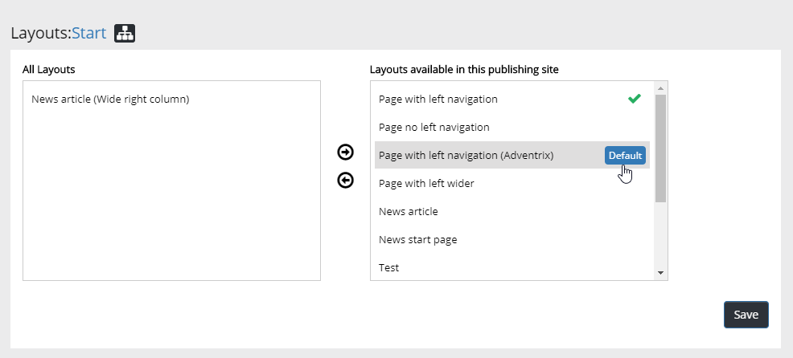

An administrator can use Layout Designer to create layouts to be used in Page Designer for Quick Pages.
Using this setting an administrator can select the Page Layouts that should be avalaible for the active Site Collection (applicable for Publishing Sites only).

The list of available Layouts is shown, for example:

You can select several by clicking on them, and deselect the same way.

One Page Layout is always Default. It's the one with a green symbol. You can select any other layout as the default by pointing at it and clicking "Default".

For more information on Layout Designer and Page Designer, see: